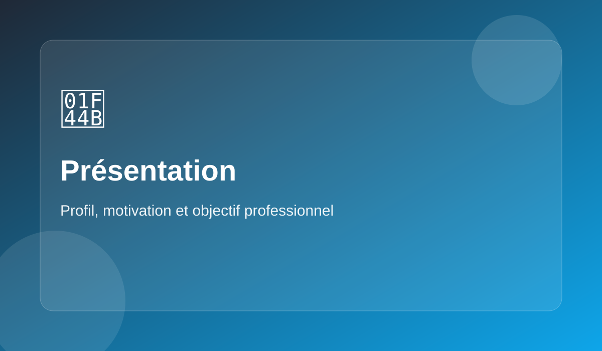

Un profil sérieux, motivé et en construction
Je m’appelle EL Battahi Ilyas, j’ai 19 ans et je suis étudiant en science des données à Dole. Je souhaite montrer à travers ce site un profil appliqué, curieux et prêt à s’investir dans un environnement professionnel.

Qui je suis
Je suis un étudiant qui cherche à construire un profil solide dès le début de son parcours. J’accorde de l’importance au sérieux, à la présentation du travail et à la progression régulière. J’aime comprendre les outils que j’utilise et avancer avec méthode.
Mon état d’esprit
Ce qui me caractérise le plus est ma motivation à apprendre. Je suis curieux, impliqué et je cherche toujours à produire un résultat clair et utile. Je veux progresser rapidement, gagner en expérience et être capable d’apporter quelque chose de concret dans une entreprise.
Pourquoi une entreprise peut s’intéresser à mon profil
- Je dispose déjà de bases techniques utiles en science des données
- Je suis polyvalent entre analyse, base de données et bureautique
- Je veux apprendre dans un cadre réel et m’adapter vite
- Je prends au sérieux la qualité, la rigueur et la présentation
Mon objectif
Mon objectif est d’intégrer un environnement où je pourrai à la fois apprendre et être utile. Je souhaite développer davantage mes compétences en Python, SQL, R, Excel et Access, tout en participant à des missions concrètes liées aux données, au reporting et à l’organisation de l’information.
Contact
Je peux être contacté facilement pour échanger autour de mon profil, d’une opportunité ou d’un premier entretien.
elbattahi.ilyas@hotmail.com
+33 7 78 00 62 87
Dole, France